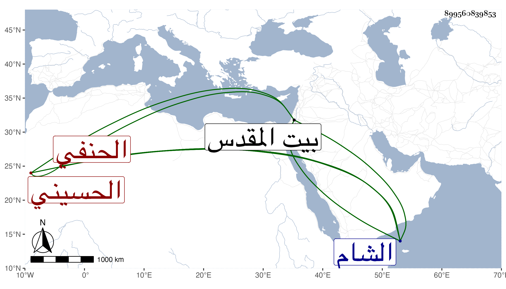

0902Sakhawi.DawLamic.ITO20230111-ara1.EIS1600.899560839853
Biography ID: 899560839853
480
محمد بن محمد بن محمد بن أحمد بن علي أبو اللطف الحسيني سكنا الحنفي ويعرف بابن شبانة بمعجمة وموحدة مفتوحتين وبعد الألف نون . فارق القزازة حرفة أبيه واشتغل قليلا في الفقه والعربية عند النظام والأمشاطي وأجلسه شاهدا بحانوت الجورة عند الكمال بن الطرابلسي ولازم البقاعي وكتب له عدة تصانيف وأخذ عنه وأهين من أجله في كائنة ابن الفارض وخطب نيابة بجامع الطاهر ونسخ بالأجرة وحج ودخل الشام وزار بيت المقدس واختفى بسبب شهادة ونسخ بالأجرة وحج ودخل الشام وزار بيت المقدس واختفى بسبب شهادة اشترك مع ابن الرومي صهر ابن فيشا فيها وأمسك ذاك فعزر وشجن ومنع من المالكي وغيره واستمر هذا مع تطلبه مختفيا ثم ظهر وعاد لمرافقته مديدة ثم سافر إلى الشام فكان بها شاهدا وتزوج وولد له هناك .
